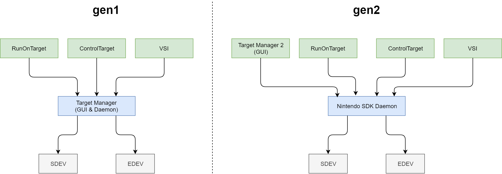

Introduction
Purpose of This Documentation
This documentation describes the Visual Studio Integration (VSI) included in NintendoSDK.
VSI provides a variety of features for building and debugging NX applications using Visual Studio.
Intended Audience
This documentation is intended for application developers using NintendoSDK.
Chapter Descriptions
For the tutorials about creating a new project using VSI, see Creating New Projects.
This chapter includes descriptions of the following items.
| Page | Description |
|---|---|
| Manual | Describes the basic VSI specifications. |
| Project Parameters | Describes the parameters that can be configured for NX application projects. |
| Debugging a Built Program | Describes how to debug NX applications after building them. |
| Creating Patches | Describes how to create a patch. |
| Using Dynamic Libraries | Describes how to use dynamic libraries from VSI. |
| Using Makefile | Describes how to use projects that are linked to an external build system. |
| Using the Dump Feature | Describes how to use the dump feature. |
| How to Use Edit and Continue | Describes how to use Edit and Continue. |
| Using Natvis | Describes how to use the Visual Studio Natvis framework. |
| Using Symbol Server | Describes how to use the symbol server. |
| Build/Debugging Troubleshooting | Describes how to fix problems that may arise while building and debugging projects. |
| Support for Environments With Visual Studio Not Installed | Describes the support for environments where Visual Studio is not installed. |
| License Notice | The license notice. |
Using Target Manager 2
VSI can also be used with Target Manager 2.
If the host PC has been configured to use Target Manager 2, VSI communicates with Nintendo SDK Daemon rather than with Target Manager. Nintendo SDK Daemon must be running when you use the VSI.

For more information about using Target Manager 2, see Guide to Setting Up the Environment > Using Target Manager 2.
Related Documentation
For more information about VSI troubleshooting, see Troubleshooting (NX Add-On).
VSI is designed to be used along with Target Manager, so also refer to that manual.
If you are using Target Manager 2, see Controlling the Development Hardware > Target Manager 2.
CONFIDENTIAL